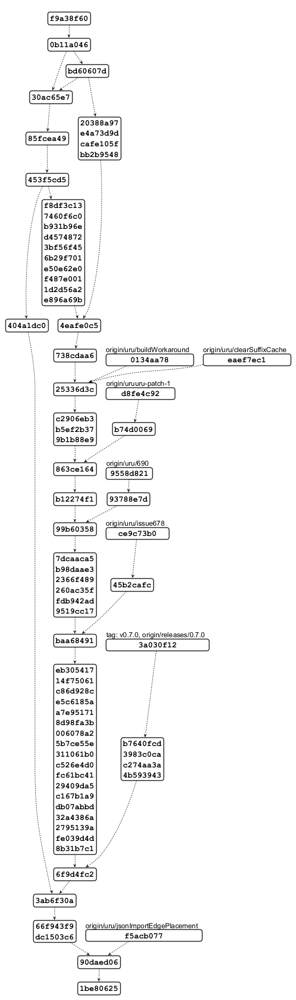

@startgit
* f9a38f60 Melk: Fix wrong dependency links. #718
* 0b11a046 Merge pull request #713 from eclipse/uru/forceStressLabel
|\
| * bd60607d Merge branch 'master' into uru/forceStressLabel
| |\
| |/
|/|
* | 30ac65e7 force.test: added plugin itself and tests for FGraph import
* | 85fcea49 force: fixed an issue where edges were imported twice
* | 453f5cd5 Merge pull request #711 from soerendomroes/sdo/issue688
|\ \
| * | 404a1dc0 core: Document content alignment properly #688
* | | f8df3c13 alg.rectpacking.test: initialize plain java layout
* | | 7460f6c0 alg.*: added nodeSize.minimum to supported options
* | | b931b96e alg.core.test: Added test checking node micro layout is executed for all layout algorithms supporting it
* | | d4574872 alg.rectpacking: #695 invoke node micro layout
* | | 3bf56f45 alg.radial: #695 invoke node micro layout
* | | 6b29f701 alg.mrtree: #695 invoke node micro layout
* | | e50e62e0 alg.force: #695 invoke node micro layout
* | | f487e001 core: added layout option to deactivate node micro layout
* | | 1d2d56a2 alg.common: created utility class to perform node micro layout
* | | e896a69b layered: Cache port sides after sorting ports #696
| | * 20388a97 stress: added an already supported layout option
| | * e4a73d9d stress: properly position edge labels
| | * cafe105f force: allow edge labels to be positioned inline
| | * bb2b9548 force: fixed an issue where a label's height was not considered
| |/
|/|
* | 4eafe0c5 core.service: workaround for broken eclipse plugin dependency on maven central
* | 738cdaa6 core: clear suffix cache when new layout options have been registered
| | * 0134aa78 (origin/uru/buildWorkaround) core.service: workaround for broken eclipse plugin dependency on maven central
| |/
|/|
| | * eaef7ec1 (origin/uru/clearSuffixCache) core: clear suffix cache when new layout options have been registered
| |/
|/|
* | 25336d3c Update MelkDocumentationGenerator.xtend
* | c2906eb3 alg.core: for UNDEFINED layout direction, stack node labels vertically when in the same cell
* | b5ef2b37 rectpacking: removed unused import
* | 9b1b88e9 graph.json: removed unneccesary import
| | * d8fe4c92 (origin/uruuru-patch-1) rectpacking: removed unused import
| | * b74d0069 graph.json: removed unneccesary import
| |/
|/|
* | 863ce164 layered: #690 adjusted layerChoiceConstraint option doc
* | b12274f1 layered: #690 Extended documentation of 'positionChoiceConstraint'
| | * 9558d821 (origin/uru/690) layered: #690 adjusted layerChoiceConstraint option doc
| | * 93788e7d layered: #690 Extended documentation of 'positionChoiceConstraint'
| |/
|/|
* | 99b60358 layered.test: add test case for #682
* | 7dcaaca5 #682: Correct node labels padding when direction is not RIGHT
* | b98daae3 layered.test: add test case for #680
* | 2366f489 #680: Fixes external port positioning
* | 260ac35f graph.json.test: #678 run PlainJavaInitialization only once
* | fdb942ad test: #678 prevent repeated registration of layout options
* | 9519cc17 Update algorithmstructure.md
| | * ce9c73b0 (origin/uru/issue678) graph.json.test: #678 run PlainJavaInitialization only once
| | * 45b2cafc test: #678 prevent repeated registration of layout options
| |/
|/|
* | baa68491 Build: Add a downloads management script. #675
* | eb305417 Update ci.yml
* | 14f75061 Update ci.yml
* | c86d928c Update ci.yml
* | e5c6185a Build: Update GitHub CI to new build. #672
* | a7e95171 Docs: Update to new build. #672
* | 8d98fa3b Build: Move additional build scripts to releng folder.
* | 006078a2 Build: Get rid of additional Maven repo for melk compiler. #672
* | 5b7ce55e Build: Move nightly build to downloads server. #672
* | 311061b0 Docs: Fixed release notes link.
* | c526e4d0 Added consider model order to release nodes.
* | fc61bc41 Docs: Update release notes.
* | 29409da5 Docs: Started writing release notes.
* | c167b1a9 Build: Fixed call to publication script.
* | db07abbd *: #657 removed outdated workarounds
* | 32a4386a Release: Bump version numbers on master.
* | 2795139a Build: Remove Javadocs. #185
* | fe039d4d Release: Extend documentation.
* | 8b31b7c1 Release: Extend release documentation.
| | * 3a030f12 (tag: v0.7.0, origin/releases/0.7.0) Docs: Release notes.
| | * b7640fcd *: #657 removed outdated workarounds
| | * 3983c0ca Build: Fixed call to publication script.
| | * c274aa3a Build: Remove Javadocs. #185
| | * 4b593943 Release: Release preparations.
| |/
|/|
* | 6f9d4fc2 *: #666 Adjusted code to removal of EdgeLP.UNDEF
|/
* 3ab6f30a core: #666 removed EdgeLabelPlacement.UNDEFINED
* 66f943f9 Layered: Fix hierarchy handling. #665
* dc1503c6 graph.json: dont set default edge label placement
| * f5acb077 (origin/uru/jsonImportEdgePlacement) graph.json: dont set default edge label placement
|/
* 90daed06 Update elkjs.yml
* 1be80625 Layered: Add user-defined direction priority to partition edges.
@endgit